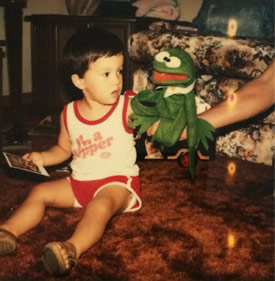
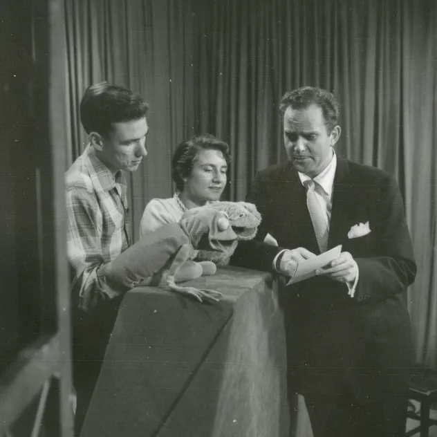
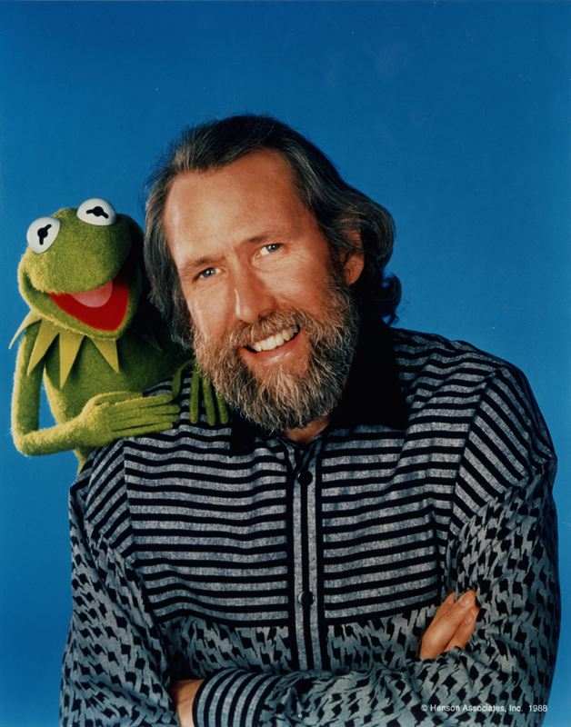
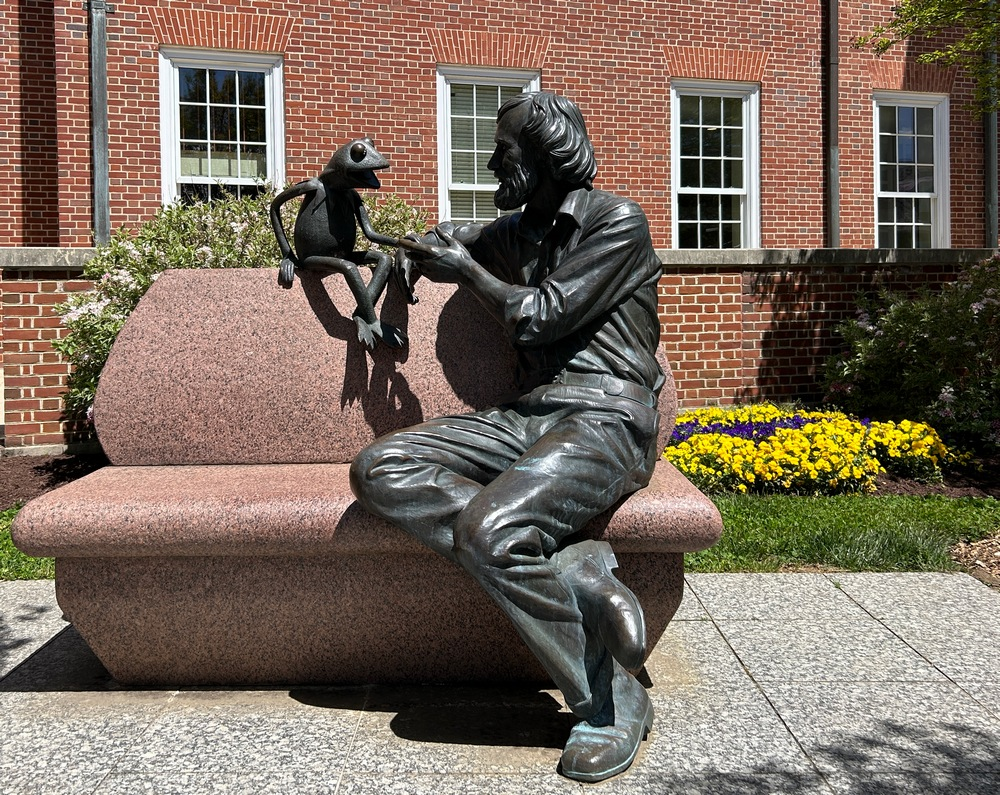
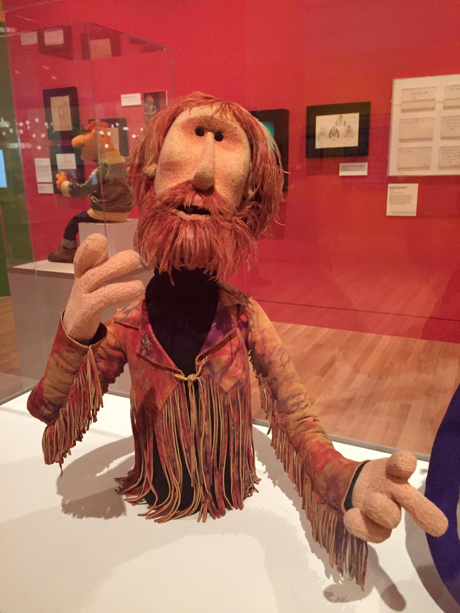
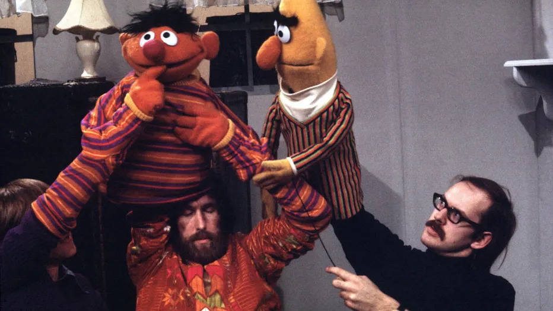
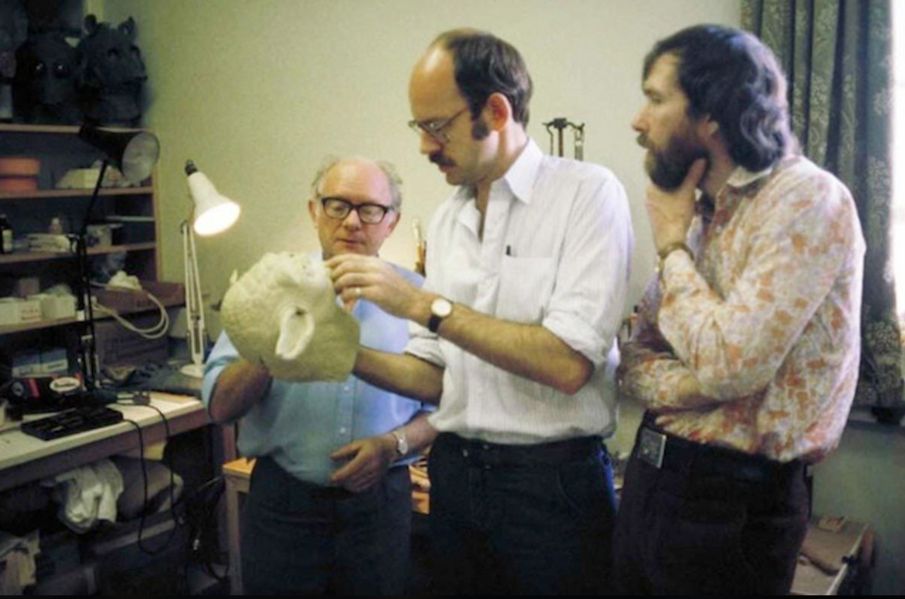
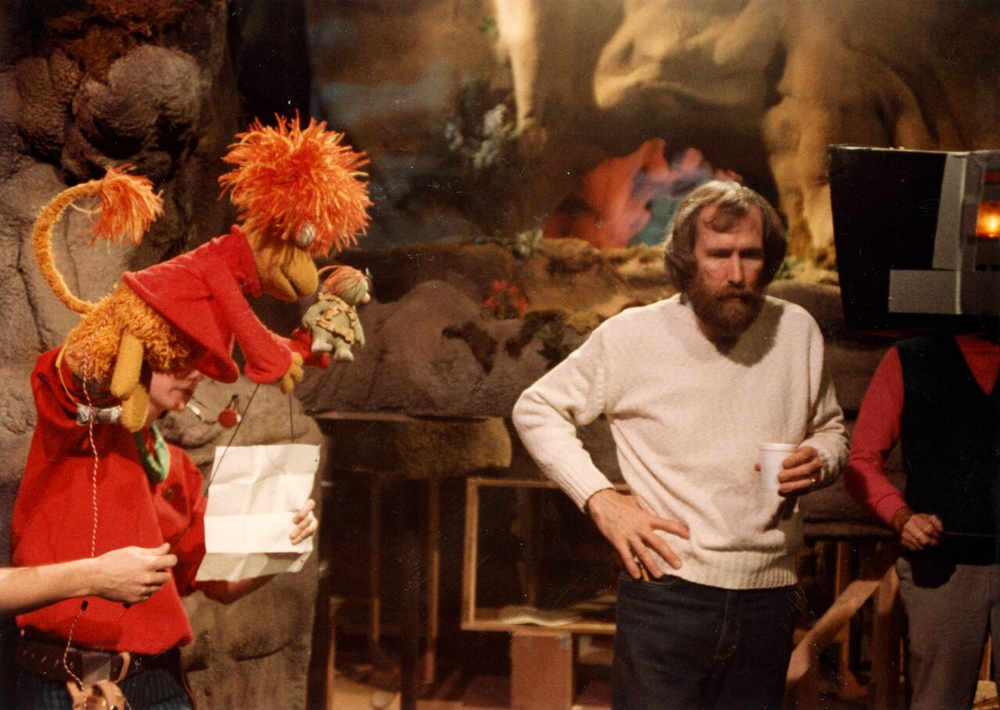
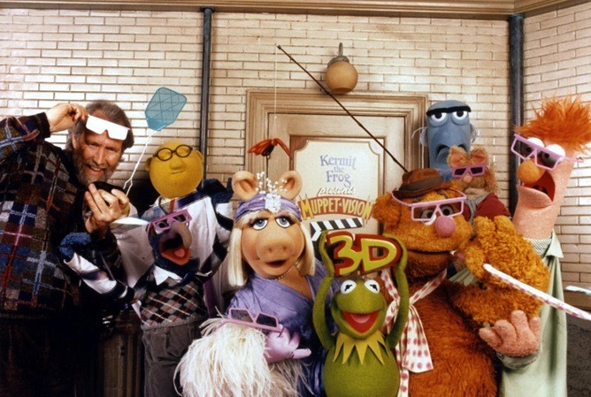

All About Jim Henson
James Maury Henson, also known as Jim Henson, was born September 24, 1936 in Greenville, Mississippi.
When his family bought their first tv set, he watched a show called Kulka, Fran and Ollie.
He was inspried by pupeeteers Bil and Cora Baird and Burr Tillstrom that worked on the show.
He attened Univerity of Maryland, College Park. During his first year in colleege, he enrolled in a puppetry class with seniors and it was there that he met his wife, Jane Nebel. In 1960, after graduating with his BS in Home Economics, he worked on different shows on what's now known as WUSA-TV. When the shows he worked got cancelled, he created a show called Sam and Friends with his friend, Roy Meachum. These shows were 3-5 minutes long and here is where his development of the Muppets began and the birth of Kermit happened.

Jim and Jane Henson on TV with an early version of a muppet.
After leaving Sam and Friends, he began figuring out his art of puppetry and cameras. He felt like having the camera stay stationary didn't bring puppets alive. This is where he went from carving puppets out of woord to using soft material that was flexible. Kermit's first form was created from fabric of an old coat of his mom's (she wasn't wearing the coat a lot before then) and a tennis ball that was cut in half for his eyes. The term Muppet came from blending the words "marionette" and "puppet".
By 1961, the Sam and Friends released its last episode. By that time, Henson gained popularity and was invited on many talk shows such as The Ed Sullivan Show and The Jack Paar Program. His fame on the tv led him to producing commericals such as different coffee products and oil. By 1963, him and his wife moved to New York City to extablish "Muppets, Inc".

This is the man, the myth, the muppet himself, Jim Henson! Many consider Kermit to be who Jim Henson is most associated with.
Puppeteers such as Frank Oz (best known as for playing Yoda in the Star Wars movies), Dave Goelz, and Richard Hunt worked alongside Henson. His company ended up creating puppets for movies such as Yoda for The Empire Strikes Back, co-directed The Dark Crystal, and the movie Labyrinth. Besides creating entertainment for adults, he created entertainment for children. He worked on Seasme Street, Fraggle Rock, and Muppet Babies. He worked for Seasme Street in 1969 after the producer of the show, Joan Ganz Cooney, was impressed by his work. She let them work full time and helped established the colorful characters most know as of today.
In 1989, Henson was in talks of selling the company to The Walt Disney Company so he could potentially work on other creative projects he wanted to accomplish. Through the Walt Disney Copany, he created the famed Muppet*Vision 3D and a tv special for Walt Disney World. On May 4th, 1990, he had his sudden last final tv apperance on the The Aresnio Hall Show with his favorite muppet, Kermit. On May 15 of that same year, he was rushed to the hospital in Manhattan due to respitory issue he was experiencing. He passed away at the of 53.
His passing impacted many who worked with him and who admired him. His memorial was very special. No one wore black, instead everyone wore bright colors. At the Cathedral of St. John the Divine, his public memorial was a celebration. Harry Belafonte sang a song he first debuted on the show called "Turn the World Around". Puppeteer Caroll Spinney performed as Big Bird and sang "Bein' Green" to the audience. Puppeteers who worked with the Muppets gathered and sang songs that Henson loved.
He is an inspiration to many to this day. During a time where AI is hurting art, many look to Henson's works to gain inspiration.

Statue of Jim Henson and Kermit sitting on a log called "Jim Henson Memorial" . It's located at University of Maryland, College Point.
One of the best quotes from Jim Henson:
Please watch out for each other. Love and forgive everybody. It's a good life. Enjoy it.
Visuals of Jim and His Works

This is a muppet of Jim Henson himself that he made and can be seen at the Center of Puppetry in Atlanta, Georgia.

Jim Henson and Frank puppeteering Ernie and Bert on Seasme Street.

Jim Henson and Frank Oz working on Yoda's head for Star Wars: The Empire Strikes Back.

Jim Henson Working on Fraggle Rock. The character next to him is called Red Fraggle.
